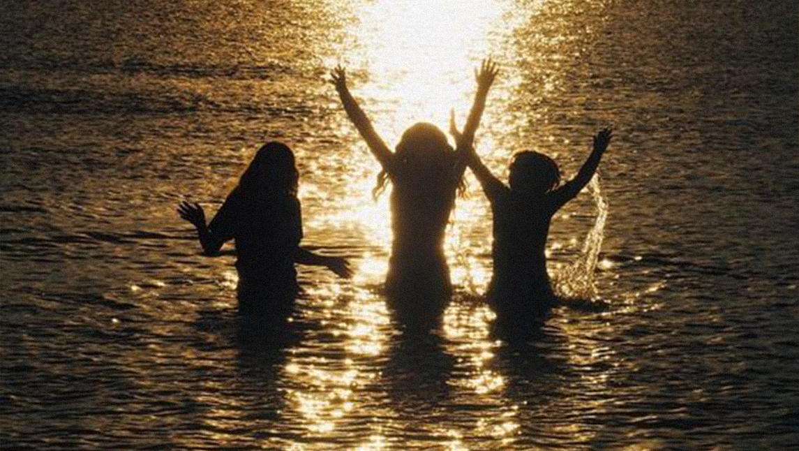

Hay grupos y colectivos que nos dan esperanza. Parece simple decirlo, de momento parece obvio. El relato de nacimiento de cada uno de esos grupos se cuenta con ánimo. A la vez, al sentirse en el espacio y el momento desde lo imaginativo se puede percibir la lucha y la tensión que enfrentaba. Nos damos cuenta que cada paso parece imposible, por lo menos improbable en aquel momento. Hoy ya los tienes, unos espacio de luz y resiliencia, verdaderas manifestaciones de la esperanza comprometida en acción.
Gracias por la invitación de Florencia y Lucia de la IAF en Argentina, hace poco tuve la oportunidad de visitar tres organizaciones sociales en el Municipio de Moreno cerca de Buenos Aires. Raúl y Laura de la Fundación Pro Vivienda Social, Rebeca de la Fundación Fútbol para el Desarrollo, y Lucas y Ezequiel de la Fundación Defensores del Chaco. Moreno es un municipio con necesidades y limitaciones, con fuerzas sociales y económicas complicadas y con gente, evidentemente por estos proyectos, resiliente y comprometida con sus familias y su comunidad.
Dejo los enlaces al final para que puedan visitar sus páginas y conocer la historia más completa, pero quiero tomar un momento para resaltar y resumir algunas cosas que en lo personal me inspiraron. La Fundación Pro Vivienda Social es un ejemplo del crecimiento orgánico de un grupo de personas que se juntan con una inquietud y un deseo específico, para incidir en los desafíos relacionados con la vivienda en el municipio, pero termina siendo un referente para muchas cosas más. Más importante tal vez qué “cosas”, son los procesos. Las actividades, que ahora realizan en diversas áreas (comedores, hortalizas comunitarias, educación, servicios, etc.), dinamizan procesos. O sea, más allá de enseñar a pescar y sembrar han vuelto un canal, un medio y una vía para guiar y apoyar a la comunidad a realizar sus propias iniciativas - y no hablan de problemas y necesidades solamente, sino de oportunidades y posibilidades. Deja de ser un sueño nada más cuando lo imposible de repente se vuelve inevitable.
La Fundación Fútbol para el Desarrollo y la Fundación Defensores del Chaco tienen algo parecido. Aunque el impulso que dan al deporte es valioso en sí mismo, la manera que han vuelto a través del deporte una herramienta para la transformación social es impresionante. Como ejemplo, unos cambios sutiles pero poderosos en las reglas del juego hacen toda la diferencia en la forma de relacionarse con el Fútbol, pero también con la vida. Me encanta la analogía porque en mi participación con Pachamama Alliance hablamos como las reglas del juego de la vida en el actual estructura política y económica mundial están sesgadas; muchas veces he puesto el ejemplo de un campo de fútbol que está inclinada hacía un lado, donde la portería de abajo va de un lado al otro y la portería de arriba es totalmente reducida de tal manera que el equipo de arriba casi solo tiene que soltar el balón y anotará, y para el otro equipo es casi imposible que anoten. Así son las reglas de nuestro sistema; están arregladas para que unos de nosotros ganemos mucho con poco esfuerzo, en que las reglas se amoldan a nosotros, y otros de nosotros, aún con mucho esfuerzo, no lograremos salir de la pobreza material. Estas organizaciones hacen cambios también de las reglas del juego, pero para ponerlas al servicio de la comunidad. Una parte de su metodología lo explican así, “...no hay distinción de sexos (juegan hombres y mujeres juntos), no participan árbitros y los partidos se dividen en tres tiempos. En el primer tiempo, los equipos establecen las reglas de juego en conjunto y de manera consensuada; en el segundo se juega el partido y en el tercer tiempo, todos los jugadores dialogan sobre el desarrollo del juego y si se respetaron las reglas que se habían acordado mutuamente. Durante los tres tiempos, un mediador participa facilitando el diálogo y la interacción entre los equipos, pero sin intervenir ni regular la partida.” Pensemos en cómo se transforma la relación con el juego y la vida. Por un lado, las habilidades y destrezas que desarrollan las y los jóvenes de comunicación y negociación cuando consensuan las reglas, y también como crea conciencia de su propio poder e incidencia, y el poder que normalmente delegamos a otros cuando se hace el cambio de árbitro externo a mediador o facilitador. Claro que en el caso de estas organizaciones estos cambios de estructura no se limitan solamente al partido, sino también al manejo del campo, las instalaciones y buena parte, el barrio. A simple vista me parece que las comunidades donde están son más limpias, respetuosas, unidas y organizadas. Tal vez podrías decir que hay muchas reglas del sistema que están fuera de su alcance para consensuar y mediarlas, pero el futuro es incierto y lleno de cambios impredecibles, instituciones que hoy parecen invencibles encontrarán con fisuras y estas comunidades estarán listas, serán las alternativas probadas e equitativas sobre lo cual se puede construir lo nuevo. Agradezco los aprendizajes de estas visitas, la inspiración que me han aportado y llevo el compromiso de aplicarlos en mi quehacer de regreso a México. Muchas gracias Flor, Lucia, Rebeca, Raul, Laura, Ezequiel y Lucas; los esperamos en México cuando gusten.